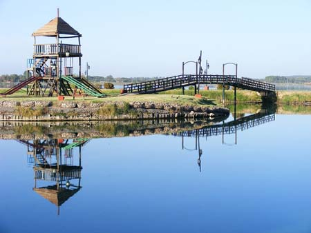
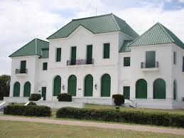
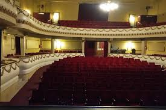
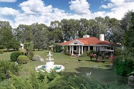
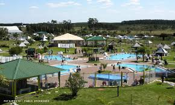

| HOME | GALERIA | SITUACION GEOGRAFICA | COSTUMBRES | SITIOS TURISTICOS |
A continuación, algunos de los sitios más interesantes que puedes visitar en Santa Rosa, La Pampa.

Un amplio parque urbano de 500 hectáreas con laguna para deportes acuáticos, pesca, juegos, miradores y un tren turístico. Ideal para disfrutar al aire libre y conectarse con la naturaleza.

Ubicada a unos 35km al sur de Santa Rosa, es la única reserva del mundo especializada en bosque de caldén. Ofrece senderos, avistaje de aves y un museo en el antiguo "Castillo" de la estancia.

El Teatro Español, fundado en 1908, es un edificio histórico de estilo barroco donde se realizan obras, conciertos y eventos culturales. También puedes visitar museos, centro cultural y mercados de artesanías en el centro de la ciudad.

Experiencias rurales cercanas a la ciudad donde puedes participar en faenas diarias como cabalgatas, domas, siembra o ordeñe. La Estancia Villaverde y la Casa-Museo La Malvina ofrecen gastronomía regional, historia y contacto con la vida pampeana.

A pocos kilómetros de la ciudad, este complejo termal ofrece baños, hidromasajes, terapias con algas y relajación en un entorno natural. Ideal para descansar y disfrutar de aguas saludables.
¡Descubre más sitios y actividades cuando visites la ciudad!